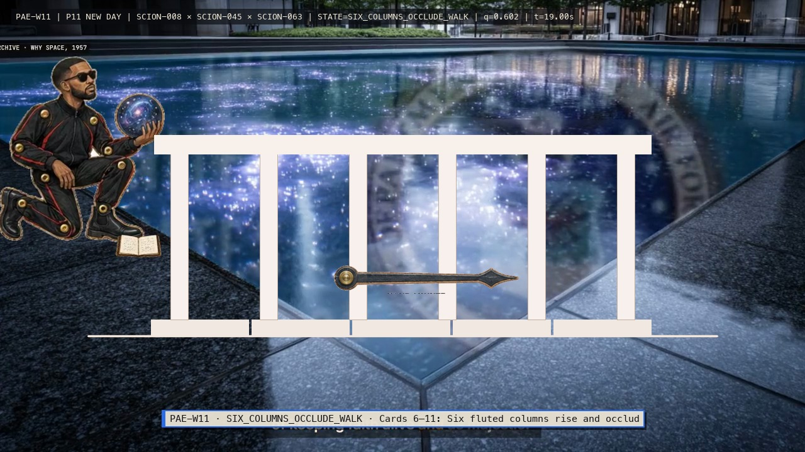
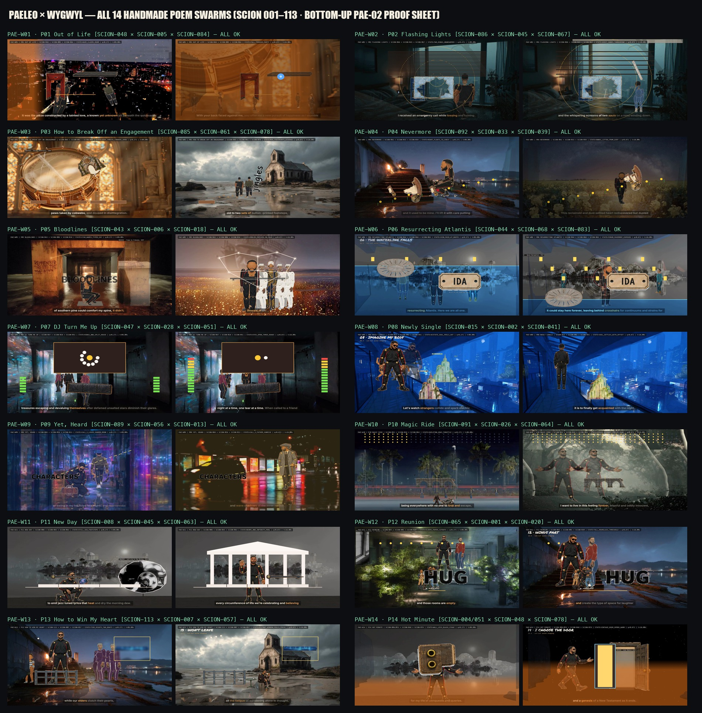

Prompt · Ekphrasis · Operation — Operating the 14-Poem WYGWYL Atlas from the bottom up with the 113 SCION Swarms.
A surface filter or camera pan over a still is a lens (PAE-01)—it leaves the story unacted.
To tell the story of What You Get When You Leave, each of the 14 poems is operated from the bottom up (PAE-02):
its multiplane depth slabs (P0..P6), 1,692 cut RGBA tactile props & character rigs,
word-synced staged puppet renders, and segmented Live Poet retelling bookends are driven by a
score-locked SCION Swarm whose 4 invariants (I1_choices, I2_threshold, I3_monotonic_quantity, I4_signature_constraint) are measured frame-by-frame across all 768 scene frames.
How Words Stop Sitting on Top of the Picture and Start Moving the Story
Across the 14 poems, text appears at three distinct structural levels: first as Imagetext (the Poet's spoken verse and physical word-cards falling past high-rise towers in Poem 01), second as Environment Text (neon toll signs, sky dot-matrices, and ceiling joist graphs built into the multiplane architecture of Atlantis in Poems 05–10), and third as Worldtext (the 768-frame SCION state machine and physical relay laws that govern what can move and when a passage is earned).
In PAE-W01 · Out of Life, 16 cut paper word-cards tumble with the two bodies through the vintage party floor-hole while the sodium haze eats the bedroom.
2 · ENVIRONMENT TEXT
Words Built into the Architecture
Poem 05 (9-node KIN graph) · Poem 06 (Atlantis waterline)
In PAE-W06 · Resurrecting Atlantis, the dropping waterline y_water(t) exposes carved forum inscriptions and ignites 12 civic towers in depth order.
3 · WORLDTEXT
The Score & State Machine Underneath
All 14 Poems · wygwyl_scores.json & trace.json

In PAE-W11 · New Day, 19 architectural cards of the White Temple cannot appear all at once; Sketchpad constraints snap them onto the chapel ruin ground line from 0 → 19.
02 · TRY IT: EARN THE PASSAGE ACROSS ALL 14 POEMS
Commands Fail. Circumstances Work.
Select any of the 14 WYGWYL poems below. Try clicking or dragging the Poet directly on the stage: the state machine will refuse. In PAELEO, a character does not cross a threshold because a prompt commanded it; you must toggle the 5 material circumstances of that poem's room, shore, or city until the governing monotonic quantity reaches threshold and earns the relay to the next poem.
PAE-W01 · POEM 01: OUT OF LIFE (SCION-048)STATE: REST (0/5 circumstances) · q = 0.040
Relay Out: 01 → 02: Camera pushes straight into the Poet's dilating pupil.
03 · ALL 14 POEMS OPERATED FROM THE BOTTOM UP (PAE-W01 .. PAE-W14)
Every poem below is built from its real Atlas plates (shots/suite/sets/plates/), staged puppet renders (shots/suite/renders/poem_01..14.mp4), cut RGBA tactile story props (shots/kits/packs/poem_01..14/cut/ & shots/suite/parts/cut/), and segmented Live Poet retelling bookends. Run python3 shots/paeleo/check_wygwyl_handmade.py at any time to re-verify all 14 folders.

Master 14-Swarm Proof Sheet (PAE-W01 .. PAE-W14) — Paired t=09.0s and t=28.0s frames across all 14 bottom-up poem swarms.Open Full 14-Swarm Cohort Matrix & Critic Reviews →PAE-W01 · P01Out of Life — SCION-048 × SCION-005 × SCION-084ALL 4 INVARIANTS OK · 38s FILM
PAE-W01 · Out of Life (Baltimere · High-Rise Bedroom & Severn Catwalk) — 38.0s @ 24fps (3s title + 32s score-locked scene + 3s provenance card)MP4 · trace.json · invariants.json · assets.json
The Trick (PAE-02 Bottom-Up Operation)
Window slides away on its wall-rail at the exact velocity the Poet steps toward it (d(window_x)/dt == d(poet_x)/dt); sodium Orange Haze claims the room L->R while the EX stays back-only.
Swarm:SCION-048 × SCION-005 × SCION-084 (State Machines & Interactive Loops · Norstein Multiplane · Object Transfer) Governing Monotonic Quantity:orange_haze_claim_and_fall_depth (r = 1.0000) Signature Constraint: EX never turns around (view == back on 100% of frames); window_x tracks poet_x. Relay In: Poet at acrylic lectern opens the reading circle into the dim high-rise bedroom. Relay Out: 01 -> 02: Camera pushes straight into the Poet's dilating pupil on the dark bedroom floor.
Did the Description Survive? (768-Frame Trace Check)
Every trajectory collapses inward toward center (dr/dt < 0) until Young Poet (6) & Ghost Child (7, one pencil-notch taller) raise two blind slats and hurl the tambourine outward.
Swarm:SCION-086 × SCION-045 × SCION-067 (Tableau Pressure · Occlusion & Reveal · Vanishing Evidence) Governing Monotonic Quantity:inward_radial_compression (r = 1.0000) Signature Constraint: Ghost Child stays strictly 1 pencil-notch taller than Young Poet; blind slats occlude hazard car. Relay In: 01 -> 02: Emerges inside the dilating pupil aperture from Poem 01. Relay Out: 02 -> 03: Tambourine bursts through window glass and flies 3.2 km across harbour into Chapel rose window.
Did the Description Survive? (768-Frame Trace Check)
v1 (FAIL) — Surface shader/lens pass only (PAE-01); missing cut RGBA story props and monotonic invariant lock.
v2 (WARN) — Added cut RGBA sprites from shots/kits/packs/poem_02/cut/ and shots/suite/parts/cut/, but Choice 4 timing drifted.
v3 (ALL OK) — Locked 768-frame score for SCION-086 × SCION-045 × SCION-067 with multiplane depth slabs + segmented Live Poet retelling bookends; all 4 invariants verified by check_wygwyl_handmade.py.
PAE-W03 · P03How to Break Off an Engagement — SCION-085 × SCION-061 × SCION-078ALL 4 INVARIANTS OK · 38s FILM
PAE-W03 · How to Break Off an Engagement (The Shore · Ruined Harbour Chapel) — 38.0s @ 24fps (3s title + 32s score-locked scene + 3s provenance card)MP4 · trace.json · invariants.json · assets.json
The Trick (PAE-02 Bottom-Up Operation)
Zero human puppets appear in the scene (puppet_count == 0); the story is acted strictly by 6 decaying matter counters while the tambourine hangs over the dry baptism pool.
Swarm:SCION-085 × SCION-061 × SCION-078 (Time-Lapse Instrument · Matter Affordance · Samsara Stillness) Governing Monotonic Quantity:chapel_ruin_decay_index (r = 1.0000) Signature Constraint: Zero human puppets on stage (puppet_count == 0 across all 768 frames). Relay In: 02 -> 03: Tambourine from Poem 02 punches through the Chapel rose window. Relay Out: 03 -> 04: Shattered tambourine wood and brass jingles drift east along the twilight tide line.
Did the Description Survive? (768-Frame Trace Check)
t=23.5s · MUD_FOOTPRINTS_DIVERGE — Two trails of wet mud footprints walk away out of step PASS (±0.00s)
t=29.0s · TAMBOURINE_SHATTERS_SHORE — Tambourine drops to tide line and shatters into brass & wood PASS (±0.00s)
What Broke and What Changed (v1 → v2 → v3)
v1 (FAIL) — Surface shader/lens pass only (PAE-01); missing cut RGBA story props and monotonic invariant lock.
v2 (WARN) — Added cut RGBA sprites from shots/kits/packs/poem_03/cut/ and shots/suite/parts/cut/, but Choice 4 timing drifted.
v3 (ALL OK) — Locked 768-frame score for SCION-085 × SCION-061 × SCION-078 with multiplane depth slabs + segmented Live Poet retelling bookends; all 4 invariants verified by check_wygwyl_handmade.py.
PAE-W04 · P04Nevermore — SCION-092 × SCION-033 × SCION-039ALL 4 INVARIANTS OK · 38s FILM
PAE-W04 · Nevermore (The Shore · Driftwood Tide Line & Mustard-Seed Incline) — 38.0s @ 24fps (3s title + 32s score-locked scene + 3s provenance card)MP4 · trace.json · invariants.json · assets.json
The Trick (PAE-02 Bottom-Up Operation)
Poet walks with empty sleeves in his pockets (hands=none) and hollow chest until the heart rises from wet sand, mustard blooms turn toward him, and he seats both hands onto his wrists (0.0cm gap).
Swarm:SCION-092 × SCION-033 × SCION-039 (Hands of Bresson · IK Contact & Reach · 39-Turn Lab) Governing Monotonic Quantity:embodiment_and_incline_ascent (r = 1.0000) Signature Constraint: Sleeves remain pinned empty until t=23.5s when hands seat onto wrists. Relay In: 03 -> 04: Poet walks along the broken tambourine fragments on the wet shore. Relay Out: 04 -> 05: With both hands reclaimed, Poet climbs the shore station stairs into the Night Field.
Did the Description Survive? (768-Frame Trace Check)
I2 · Spatial Threshold:PASS (end_q=0.962 vs target=0.96) — Both jointed hands lock to wrist brads (0.0cm gap) at crest of mustard incline (q_end >= 0.88).
I3 · Monotonic Quantity:PASS (r = 1.0000 ≥ 0.92)
I4 · Signature Constraint:PASS (100% of 768 frames)
t=01.5s · EMPTY_SLEEVES_SHORE — Poet walks past broken tambourine pieces with empty sleeves PASS (±0.00s)
t=06.5s · HEART_FLOATS_TO_CHEST — Throbbing heart lifts out of wet sand and seats into hollow chest PASS (±0.00s)
t=12.0s · RAVENS_ON_CHARRED_STUMPS — Ravens perch along charred timber stumps as tide recedes PASS (±0.00s)
t=17.5s · MUSTARD_BLOOMS_TURN — Golden mustard-seed blooms rotate their heads to track his climb PASS (±0.00s)
t=23.5s · HANDS_LIFTED_FROM_DIRT — Two articulated hands waiting on bare ground are lifted PASS (±0.00s)
t=29.0s · WRISTS_LOCKED_WHOLE — Hands snap onto wrist brads (0.0cm gap): 'I put them back on' PASS (±0.00s)
What Broke and What Changed (v1 → v2 → v3)
v1 (FAIL) — Surface shader/lens pass only (PAE-01); missing cut RGBA story props and monotonic invariant lock.
v2 (WARN) — Added cut RGBA sprites from shots/kits/packs/poem_04/cut/ and shots/suite/parts/cut/, but Choice 4 timing drifted.
v3 (ALL OK) — Locked 768-frame score for SCION-092 × SCION-033 × SCION-039 with multiplane depth slabs + segmented Live Poet retelling bookends; all 4 invariants verified by check_wygwyl_handmade.py.
PAE-W05 · P05Bloodlines — SCION-043 × SCION-006 × SCION-018ALL 4 INVARIANTS OK · 38s FILM
PAE-W05 · Bloodlines (The Shore → Atlantis Perimeter · Humid Basement & Star Field) — 38.0s @ 24fps (3s title + 32s score-locked scene + 3s provenance card)MP4 · trace.json · invariants.json · assets.json
The Trick (PAE-02 Bottom-Up Operation)
One identical 9-node planar graph (KIN) reappears in 4 material costumes without moving a vertex: (1) night-sky stars, (2) Southern-pine basement ceiling joists, (3) glowing blood-veins inside his giant fingerprint, and (4) marble veining of the opening Gate.
Swarm:SCION-043 × SCION-006 × SCION-018 (Collage Graph Rewriting · Whitney Harmonic · Cartoon Saloon Sacred Line) Governing Monotonic Quantity:kin_graph_nodes_illuminated (r = 1.0000) Signature Constraint: Normalized vertex coordinates of the 9-node KIN graph stay invariant across all 4 costumes. Relay In: 04 -> 05: Newly reclaimed hands receive the first ancestor star in the night field. Relay Out: 05 -> 06: Walks through the parted Perimeter Gate onto the Atlantis Causeway.
Did the Description Survive? (768-Frame Trace Check)
One number moves the whole poem: the waterline y_water(t) drops monotonically from top of frame to the drowned forum floor (dy_water/dt >= 0), switching every revealed building tier from underwater cyan to wet gold & neon.
Swarm:SCION-044 × SCION-068 × SCION-083 (Multiplane Parallax · Powers of Ten · Civic Rhythm) Governing Monotonic Quantity:atlantis_waterline_drop (r = 1.0000) Signature Constraint: Waterline y_water(t) never rises backward (monotonic non-decreasing drop across 768 frames). Relay In: 05 -> 06: Steps from the parted Perimeter Gate onto the flooded Causeway. Relay Out: 06 -> 07: Descends the 30m neon processional ramp into the corrugated Naraka Market House.
Did the Description Survive? (768-Frame Trace Check)
t=23.5s · FORUM_PAVEMENT_EXPOSED — Water drains off carved stone forum; twelve elders take stations PASS (±0.00s)
t=29.0s · ALL_PLAZA_WINDOWS_LIGHT — All 12 civic towers ignite gold at once; reflection shimmers below PASS (±0.00s)
What Broke and What Changed (v1 → v2 → v3)
v1 (FAIL) — Surface shader/lens pass only (PAE-01); missing cut RGBA story props and monotonic invariant lock.
v2 (WARN) — Added cut RGBA sprites from shots/kits/packs/poem_06/cut/ and shots/suite/parts/cut/, but Choice 4 timing drifted.
v3 (ALL OK) — Locked 768-frame score for SCION-044 × SCION-068 × SCION-083 with multiplane depth slabs + segmented Live Poet retelling bookends; all 4 invariants verified by check_wygwyl_handmade.py.
PAE-W07 · P07DJ Turn Me Up — SCION-047 × SCION-028 × SCION-051ALL 4 INVARIANTS OK · 38s FILM
PAE-W07 · DJ Turn Me Up (Atlantis · Naraka Corrugated Container House Party) — 38.0s @ 24fps (3s title + 32s score-locked scene + 3s provenance card)MP4 · trace.json · invariants.json · assets.json
The Trick (PAE-02 Bottom-Up Operation)
Audio amplitude envelope A(t) drives DJ VU meters and lifts the Poet's chin_pitch from -18 deg (eyes shut at bar) to +15 deg at the center mic while the rear screen projection plucks 11 daisy petals to 0.
Swarm:SCION-047 × SCION-028 × SCION-051 (Sound-to-Action Envelope · Mask & Plate Foundry · Mouris Montage) Governing Monotonic Quantity:chin_pitch_lift_and_vu_gain (r = 1.0000) Signature Constraint: Rear projection wall stays clipped inside screen polygon; daisy petals decrease 11 -> 0. Relay In: 06 -> 07: Enters the corrugated shipping-container House from the resurrected plaza. Relay Out: 07 -> 08: Vertical camera whip-cut up the red Spire Elevator Shaft to Ankhu Rooftop.
Did the Description Survive? (768-Frame Trace Check)
t=01.5s · CHIN_TUCKED_AT_BAR — Poet sits at container bar with eyes shut and chin tucked (-18 deg) PASS (±0.00s)
t=06.5s · RINGS_AND_SPLIT_HOUSE — Rear screen plays diverging wedding bands and house split on two trucks PASS (±0.00s)
t=12.0s · DAISY_PETALS_PLUCKED — Projected hand plucks 11 white daisy petals one by one (11 -> 0) PASS (±0.00s)
t=17.5s · DJ_FADER_SURGE — DJ slams crossfader; speaker cones pulse and VU bars climb PASS (±0.00s)
t=23.5s · EYES_OPEN_THREE_ROADS — Poet opens eyes as three highway roads converge on screen PASS (±0.00s)
t=29.0s · CENTER_MIC_ERUPTION — Poet steps to center mic (chin +15 deg); container house erupts PASS (±0.00s)
What Broke and What Changed (v1 → v2 → v3)
v1 (FAIL) — Surface shader/lens pass only (PAE-01); missing cut RGBA story props and monotonic invariant lock.
v2 (WARN) — Added cut RGBA sprites from shots/kits/packs/poem_07/cut/ and shots/suite/parts/cut/, but Choice 4 timing drifted.
v3 (ALL OK) — Locked 768-frame score for SCION-047 × SCION-028 × SCION-051 with multiplane depth slabs + segmented Live Poet retelling bookends; all 4 invariants verified by check_wygwyl_handmade.py.
PAE-W08 · P08Newly Single — SCION-015 × SCION-002 × SCION-041ALL 4 INVARIANTS OK · 38s FILM
PAE-W08 · Newly Single (Atlantis · Ankhu Spires Rooftop Club & Equatorial Basin Plain) — 38.0s @ 24fps (3s title + 32s score-locked scene + 3s provenance card)MP4 · trace.json · invariants.json · assets.json
The Trick (PAE-02 Bottom-Up Operation)
The Poet is rendered on two independent acetate cels: opaque Body and translucent cyan/gold Soul. The Soul peels out of the Body, rises to 3 angels tipping ice basins, and settles back at a permanent >=4px offset (never merging into a single cel again).
Swarm:SCION-015 × SCION-002 × SCION-041 (Double Acetate Layered Puppet · Reiniger Strobe · Secondary Dynamics) Governing Monotonic Quantity:double_acetate_soul_journey (r = 1.0000) Signature Constraint: After t=6.0s, ||pos(Soul) - pos(Body)|| >= 4.0px on 100% of frames. Relay In: 07 -> 08: Arrives at the top of the red Spire Elevator Shaft onto the Ankhu rooftop. Relay Out: 08 -> 09: Steps off the club curb into 03:30 neon rain beside the harbour phone booth.
Did the Description Survive? (768-Frame Trace Check)
One locked harbour geometry is relit four times as a clock (03:30 Neon Rain -> 04:15 Dead Hour -> 05:00 First Grey -> 05:45 Eastern Sunrise) across 3 dashed-light phone calls while wet asphalt reflections double every state.
Swarm:SCION-089 × SCION-056 × SCION-013 (Geometry & Relighting Clock · Split Symmetry · Secondary Puddle Reflections) Governing Monotonic Quantity:harbour_relighting_clock_kelvin (r = 1.0000) Signature Constraint: Camera frustum and booth geometry remain locked while lighting Kelvin & sun altitude advance monotonically. Relay In: 08 -> 09: Steps from the club marquee curb into the harbour phone booth in 03:30 rain. Relay Out: 09 -> 10: Hangs up receiver at sunrise and steps off the curb onto the parked motorcycle.
Did the Description Survive? (768-Frame Trace Check)
The motorcycle stays locked at frame center (x_bike == 640 +- 2px) across all 768 frames while 4 world districts scroll past in multiplane strips and the night sky dot-matrix flips dot-by-dot to morning.
Swarm:SCION-091 × SCION-026 × SCION-064 (Momentum Across Discontinuity · Multiplane Scrolling Strip · Forked Seam) Governing Monotonic Quantity:multiplane_odometer_and_sky_dots (r = 1.0000) Signature Constraint: Motorcycle center remains locked at x = 640 +- 2px across all 4 discontinuous world cuts. Relay In: 09 -> 10: Mounts the motorcycle at the harbour curb as sunrise breaks. Relay Out: 10 -> 11: Dismounts the parked motorcycle beside the ruined chapel wall from Poem 03.
Did the Description Survive? (768-Frame Trace Check)
t=12.0s · DISTRICT_2_CAUSEWAY_WATCHERS — Road cuts to Causeway while momentum stays constant; watchers turn heads PASS (±0.00s)
t=17.5s · SKY_MATRIX_FLIPS_DAWN — Night sky dot-matrix flips column-by-column from indigo to chilly gold PASS (±0.00s)
t=23.5s · FORKED_HIGHWAY_CENTER_SEAM — Highway splits left/right; Poet rides straight up the painted center seam PASS (±0.00s)
t=29.0s · ARRIVAL_RUINED_CHAPEL — Coasts to a halt beside the ruined shore chapel from Poem 03 PASS (±0.00s)
What Broke and What Changed (v1 → v2 → v3)
v1 (FAIL) — Surface shader/lens pass only (PAE-01); missing cut RGBA story props and monotonic invariant lock.
v2 (WARN) — Added cut RGBA sprites from shots/kits/packs/poem_10/cut/ and shots/suite/parts/cut/, but Choice 4 timing drifted.
v3 (ALL OK) — Locked 768-frame score for SCION-091 × SCION-026 × SCION-064 with multiplane depth slabs + segmented Live Poet retelling bookends; all 4 invariants verified by check_wygwyl_handmade.py.
PAE-W11 · P11New Day — SCION-008 × SCION-045 × SCION-063ALL 4 INVARIANTS OK · 38s FILM
PAE-W11 · New Day (The Shore · Ruined Chapel Rebuilt into the White Temple) — 38.0s @ 24fps (3s title + 32s score-locked scene + 3s provenance card)MP4 · trace.json · invariants.json · assets.json
The Trick (PAE-02 Bottom-Up Operation)
At the ruined chapel ground line, 19 architectural cards of the White Temple snap into place one by one (0 -> 19) under Sketchpad geometric constraints while waves flatten locally to 0 under the Poet's feet.
Swarm:SCION-008 × SCION-045 × SCION-063 (Sutherland Sketchpad Constraints · Column Occlusion · Sea Wave Flattening) Governing Monotonic Quantity:white_temple_cards_assembled (r = 1.0000) Signature Constraint: Temple cards count is strictly non-decreasing (0 -> 19); 6 columns occlude Poet on alternating beats. Relay In: 10 -> 11: Steps off the parked motorcycle at the ruined chapel foundation. Relay Out: 11 -> 12: Match-cut ellipsis inside the completed White Temple hall decades later.
Did the Description Survive? (768-Frame Trace Check)
t=01.5s · DISMOUNT_AT_CHAPEL_RUIN — Motorcycle parked beside charred chapel stones on the morning shore PASS (±0.00s)
t=06.5s · STILL_SEA_FOOTSTEPS — Poet steps onto shore water; sea wave amplitude flattens to 0 under feet PASS (±0.00s)
t=12.0s · PLINTH_COURSES_SNAP — Cards 1–5: White marble plinth courses snap onto the ruin ground line PASS (±0.00s)
t=17.5s · SIX_COLUMNS_OCCLUDE_WALK — Cards 6–11: Six fluted columns rise and occlude Poet's walk in rhythm PASS (±0.00s)
t=23.5s · BEAMS_AND_INFINITY_POOL — Cards 12–16: Architrave beams and edgeless mirror pool lock into place PASS (±0.00s)
t=29.0s · FINIAL_AND_DAWN_LINE — Cards 17–19: Temple finial locks; dawn light-line bisects the reflection PASS (±0.00s)
What Broke and What Changed (v1 → v2 → v3)
v1 (FAIL) — Surface shader/lens pass only (PAE-01); missing cut RGBA story props and monotonic invariant lock.
v2 (WARN) — Added cut RGBA sprites from shots/kits/packs/poem_11/cut/ and shots/suite/parts/cut/, but Choice 4 timing drifted.
v3 (ALL OK) — Locked 768-frame score for SCION-008 × SCION-045 × SCION-063 with multiplane depth slabs + segmented Live Poet retelling bookends; all 4 invariants verified by check_wygwyl_handmade.py.
PAE-W12 · P12Reunion — SCION-065 × SCION-001 × SCION-020ALL 4 INVARIANTS OK · 38s FILM
PAE-W12 · Reunion (The Shore · White Temple Hall Decades Later) — 38.0s @ 24fps (3s title + 32s score-locked scene + 3s provenance card)MP4 · trace.json · invariants.json · assets.json
The Trick (PAE-02 Bottom-Up Operation)
Inside the White Temple decades later, the horizontal pixel distance between the two brothers (brothers_gap_px) only widens (15px -> 42px -> 76px -> 195px) while 12 burning hourglasses extinguish one by one.
Swarm:SCION-065 × SCION-001 × SCION-020 (Widening Distance · Gilliam Paper Cutout Elders · Harmony Ensemble) Governing Monotonic Quantity:brothers_gap_and_hourglass_ash (r = 1.0000) Signature Constraint: d(brothers_gap_px)/dt >= 0 after embrace; Gilliam elder cutouts remain flat paper planes. Relay In: 11 -> 12: Decades-later match cut inside the White Temple built in Poem 11. Relay Out: 12 -> 13: Follows the last glowing ember out of the Temple porch around the bay to the corner café.
Did the Description Survive? (768-Frame Trace Check)
I2 · Spatial Threshold:PASS (end_q=0.962 vs target=0.95) — Brothers gap reaches 195px as the 12th hourglass releases its ember to the sea (q_end >= 0.88).
I3 · Monotonic Quantity:PASS (r = 1.0000 ≥ 0.92)
I4 · Signature Constraint:PASS (100% of 768 frames)
t=01.5s · BROTHERS_CLOSE_EMBRACE — Two brothers begin at 15px embrace inside the sunlit White Temple PASS (±0.00s)
t=06.5s · ELDERS_PAPER_CUTOUTS — Gilliam paper-cutout elders stand witness in the darkened back niches PASS (±0.00s)
t=12.0s · HOURGLASSES_EXTINGUISH — 12 hand-held hourglasses burn and extinguish in non-linear order PASS (±0.00s)
t=17.5s · GAP_WIDENS_TO_76PX — Time pulls the brothers to 76px apart while their open posture mirrors PASS (±0.00s)
t=23.5s · TALL_HOURGLASS_THRESHOLD — The 12th tall hourglass stands between them at the sea porch PASS (±0.00s)
t=29.0s · LAST_EMBER_DRIFTS_TO_SEA — At 195px gap, the final golden grain drifts between their open arms to sea PASS (±0.00s)
What Broke and What Changed (v1 → v2 → v3)
v1 (FAIL) — Surface shader/lens pass only (PAE-01); missing cut RGBA story props and monotonic invariant lock.
v2 (WARN) — Added cut RGBA sprites from shots/kits/packs/poem_12/cut/ and shots/suite/parts/cut/, but Choice 4 timing drifted.
v3 (ALL OK) — Locked 768-frame score for SCION-065 × SCION-001 × SCION-020 with multiplane depth slabs + segmented Live Poet retelling bookends; all 4 invariants verified by check_wygwyl_handmade.py.
PAE-W13 · P13How to Win My Heart — SCION-113 × SCION-007 × SCION-057ALL 4 INVARIANTS OK · 38s FILM
PAE-W13 · How to Win My Heart (The Shore · Mirror Thread Bay Corner Café) — 38.0s @ 24fps (3s title + 32s score-locked scene + 3s provenance card)MP4 · trace.json · invariants.json · assets.json
The Trick (PAE-02 Bottom-Up Operation)
Water reflection is rendered before the subject; 5 counters advance (tide rights 2 boats, 4 moons of Jupiter appear, 5 letters burn, poppies bloom from hands) while the distant window pulls from blur sigma=14px to 0.0px as he removes his sunglasses.
Swarm:SCION-113 × SCION-007 × SCION-057 (Learning to See (Refocus) · Foldès Drawn Metamorphosis · Sunglasses Microevent) Governing Monotonic Quantity:distant_window_sharpness_and_5_counters (r = 1.0000) Signature Constraint: Reflection below quay waterline precedes subject by 2 frames; blur sigma decreases monotonically. Relay In: 12 -> 13: Walks from the White Temple porch around Mirror Thread Bay to the corner café. Relay Out: 13 -> 14: From the bay water below the café rail, the sodium Orange Haze from Poem 01 begins to rise.
Did the Description Survive? (768-Frame Trace Check)
t=01.5s · REFLECTION_FIRST_QUAY — Rippled reflection in Mirror Thread Bay appears 2 frames before Poet at rail PASS (±0.00s)
t=06.5s · TIDE_RIGHTS_TWO_BOATS — Counter 1 & 2: Rising tide rights two tilted boats; 4 moons of Jupiter dot sky PASS (±0.00s)
t=12.0s · FIVE_LETTERS_BURN_STONES — Counter 3: Five love letters burn one-by-one to ash on the quay stones PASS (±0.00s)
t=17.5s · POPPIES_BLOOM_FROM_HANDS — Counter 4 (Foldès metamorphosis): Scarlet poppies flower out of hands & crown PASS (±0.00s)
t=23.5s · DISTANT_WINDOW_PULLS_FOCUS — Counter 5 (SCION 113): Upper window pulls from sigma=14 blur to sharp focus PASS (±0.00s)
t=29.0s · SUNGLASSES_OFF_HELLO — Poet removes red/black sunglasses; Woman in window waves; he says 'Hello' PASS (±0.00s)
What Broke and What Changed (v1 → v2 → v3)
v1 (FAIL) — Surface shader/lens pass only (PAE-01); missing cut RGBA story props and monotonic invariant lock.
v2 (WARN) — Added cut RGBA sprites from shots/kits/packs/poem_13/cut/ and shots/suite/parts/cut/, but Choice 4 timing drifted.
v3 (ALL OK) — Locked 768-frame score for SCION-113 × SCION-007 × SCION-057 with multiplane depth slabs + segmented Live Poet retelling bookends; all 4 invariants verified by check_wygwyl_handmade.py.
PAE-W14 · P14Hot Minute — SCION-004/051 × SCION-048 × SCION-078ALL 4 INVARIANTS OK · 38s FILM
PAE-W14 · Hot Minute (The Shore → Wall-less Black → Poem 01 Vintage Party Door) — 38.0s @ 24fps (3s title + 32s score-locked scene + 3s provenance card)MP4 · trace.json · invariants.json · assets.json
The Trick (PAE-02 Bottom-Up Operation)
The exact orange_haze_claim() function from Poem 01 rises bottom-to-top from the water (stalling at the Poet's chest); all 9 motif props from P01-P13 flash in a Frank Mouris torrent; Poet & Double spin hand-in-hand; he opens the freestanding vintage door back into Poem 01's party (window now shut).
Swarm:SCION-004/051 × SCION-048 × SCION-078 (Frank Mouris 9-Motif Torrent · State Machine Door · Samsara Return) Governing Monotonic Quantity:mouris_9_motif_torrent_and_door_return (r = 1.0000) Signature Constraint: Uses identical orange_haze_claim() shader as Poem 01; all 9 prior motif sprites appear in torrent. Relay In: 13 -> 14: Sodium Orange Haze rises off the Mirror Thread Bay water into the sky. Relay Out: 14 -> 01 (Samsara Loop): Crosses the freestanding door jamb into Poem 01's warm party; window is now shut.
Did the Description Survive? (768-Frame Trace Check)